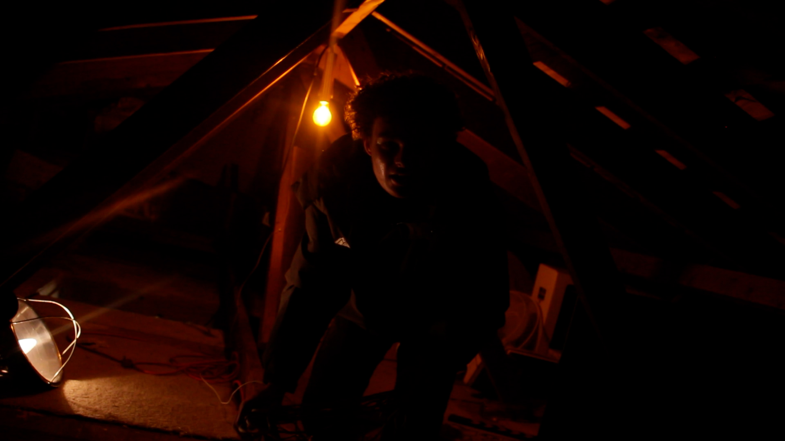
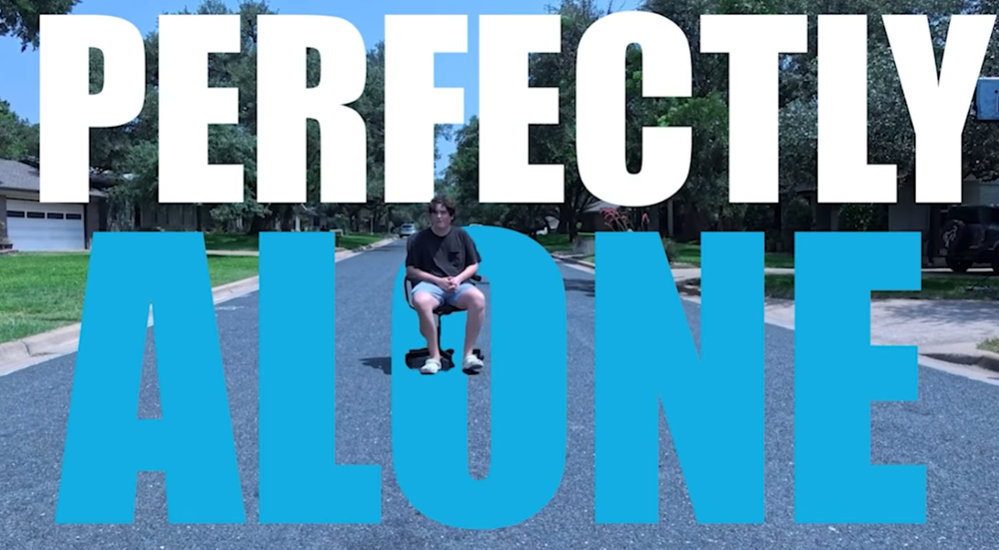
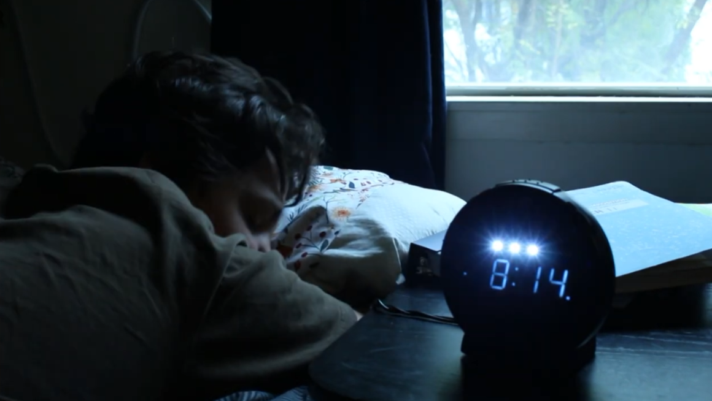
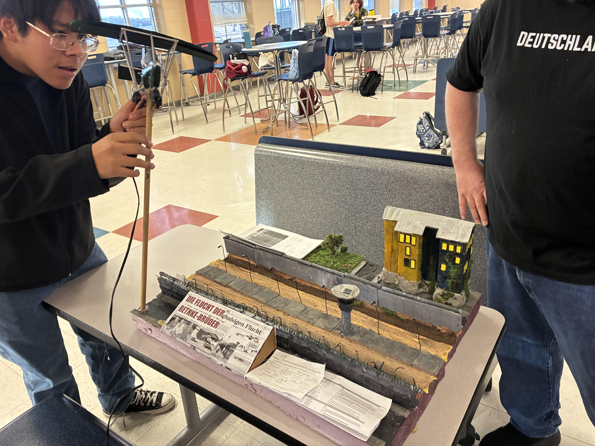
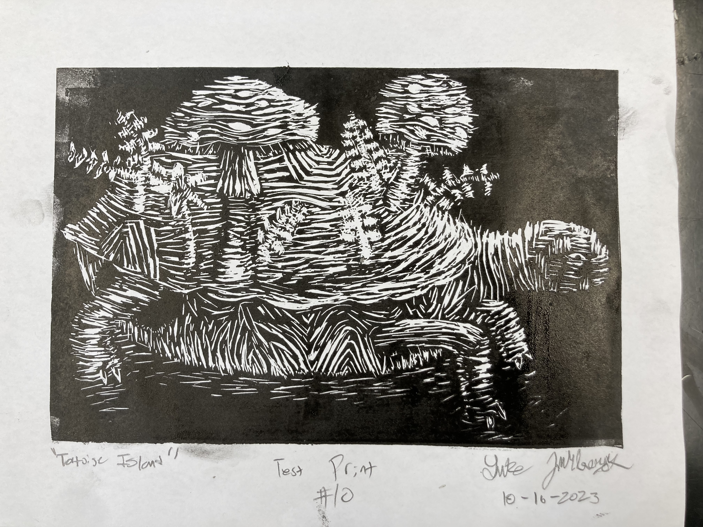
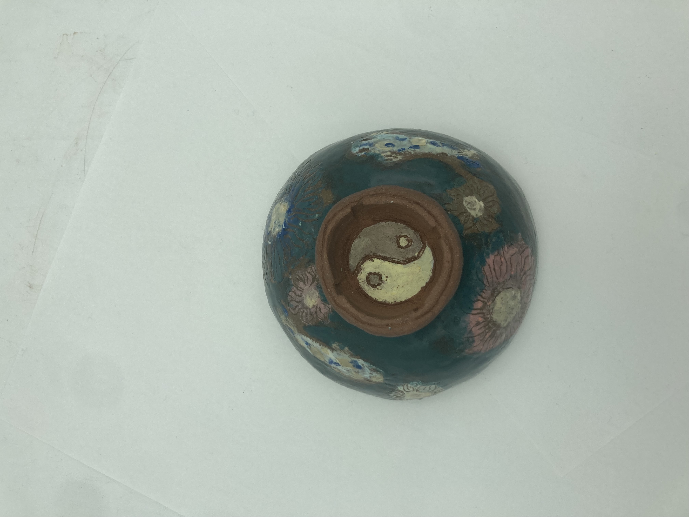
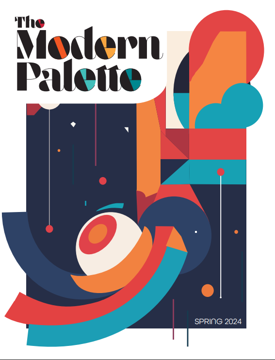
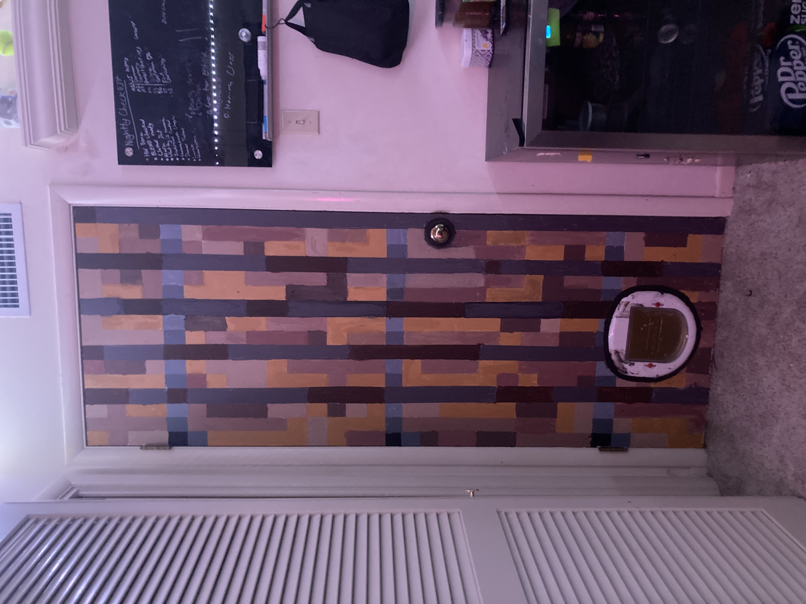
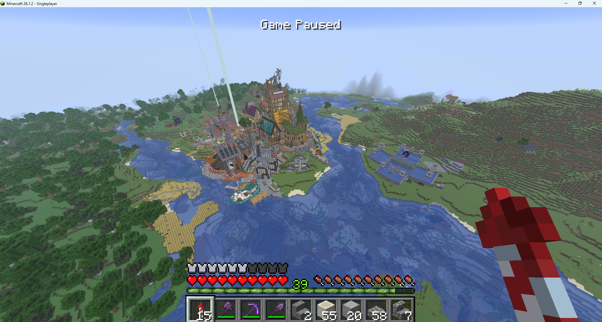

Home / Visual Work
VISUAL
WORK
Engineering tells you how things work. Art makes you figure out why they matter. Most of these projects live in both at once. Some are films, some are sculptures, some are journalism, and one is just a bedroom door painted to look like a video game texture.
Paranoid won Audience Favorite, Best Picture, and Best Director at the 2025 LASA Film Show at the Alamo Drafthouse. The Berlin Wall diorama took 1st at Regionals and 3rd at the Texas State German Contest. The rest taught things that don't fit on a trophy.

Ariya lives alone. Things start moving on their own — a fallen painting, the cat gone, the attic camera blinking offline. She tells her landlord's son. He calls her dramatic. She tells a friend. He blames stress. She installs more cameras. Then she goes up into the attic herself. The film is really about what happens when no one believes a woman's account of her own experience, and then it turns out she was right the whole time.

ALONE
Getting into LASA. Spending freshman year addicted to being perfect. Late nights, piano practice I hated, a friend whose only interest in me was my answers on the homework. Then a recital where I messed up every note and smiled through all of it. After that, grades actually got better.

HOURS
One day: Bach Prelude and Fugue No.2 on piano, pickleball with my dad, school computer work, math homework, piano again, sleep. The music plays the whole way through without stopping. My teacher gave a lecture on film clichés after I submitted it because I opened with an alarm clock going off. She was right.

DIORAMA
The Bethke brothers escaped East Germany in 1989 by ultralight aircraft. The west side is painted murals and green grass. The east side is gray, bricked windows, litter. The death strip has real soil, barbed wire from floral wire, popsicle stick hedgehogs, a raked sand strip. Above it all, a model Microlight Fox II hangs from a dowel: cold brew can nose cone, cardboard wings, LEGO and 3D printed wheels.

PORTRAIT
Skin tone in colored pencil starts with dark purple, not peach. Then cool red, then peach blended on top. My teacher told me it didn't look realistic in progress. I kept going. She gave me extra credit when it was done.

ISLAND
A tortoise carrying a garden ecosystem on its shell. Carved during 10 straight lunch periods when the deadline arrived and the block was still blank. Submitted four times. Grades went 60, 75, 90, then 95.

BOWL
Hand-sculpted red clay for the Austin Empty Bowl Project. Koi loop around the outside in glaze. Yin-yangs on the interior and exterior base. The glazes overlapped during firing and blurred the outlines. It ended up a better object for it.

PALETTE
A four-page feature on whether architecture is art, built around three Austin architects who all answer the question differently. Cold-emailed the firms, arranged the meetings, showed up, took the photos, wrote the article. No adult guidance.


10 YEARS
Started at age 5 because my older brother played. By 10 I'd built a working iPhone in command blocks. Now there's a medieval city, a full farm network across three dimensions, and a bedroom door painted grid by grid to match the spruce door texture.